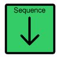
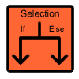
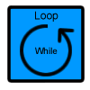
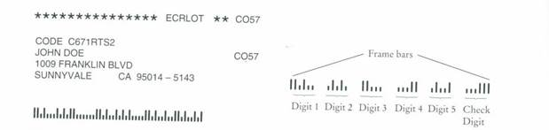

Chapter 8 introduces the concept of an algorithm, a step-by-step sequence of instructions for carrying out some task. This lab is designed to help you practice writing algorithms and to prepare you to write programs that need to handle choices and repetition.
Give your answers to the exercises in a text document and submit on Blackboard for grading.
Notes:
SET counter to 1
This statement indicates to the reader that we need to store a value of 1 into a variable called counter.
- we can use the word WRITE for output:
WRITE "The answer is "
WRITE counter
The first statement indicates the action of writing the characters between the double quotation marks called strings on the screen. The second statement indicates the action of writing the content of the variable counter on the screen.
- we can use the word READ for input:
READ number
This statement indicates that the user was prompted by the computer for input. The numeric value entered by the user is saved in memory in the variable number.
if the condition is true, execute the indented statements; if the condition is not true, skip the indented statements:
IF (condition)
action_if_condition_true
// rest of the pseudocode
for example:
IF (temperature > 80)
GO to the beach
if the condition is true, execute the indented statements; if the condition is not true, execute the indented statements below ELSE:
IF (condition)
action_if_condition_true
ELSE
action_if_condition_false
// rest of the pseudocode
for example:
IF (temperature > 80)
GO to the beach
ELSE
STAY home
REPEAT the indented statements x number of times
statement 1
...
statement n
//rest of the pseudocode
OR
WHILE (condition is met)
statement 1
statement 2
...
statement n
//rest of the pseudocode
for example, if I have 5 candies and want to eat them all, one at the time, I would describe it using the following algorithm:
REPEAT the indented lines 5 times
REMOVE wrapper
EAT one candy
INCREMENT the counter by 1
WRITE "No more candies left"
however, if I do not know how many candies I have and want to eat them all, one at the time, I would describe it using the following algorithm:
WHILE there are any candies left
REMOVE wrapper
EAT one candy
WRITE "No more candies left"
Algorithm Flow of Control:
In many algorithms, the sequential flow of control is the default behavior. However, we often need to alter this flow; "selection" and "loop" are provided for altering the sequential flow of control:
|  | Sequence is composed of a series of statements which are executed one by one from top to bottom. Sequence is the default flow of control for many algorithms. |
|  | Selection is used to alter the flow of control when a choice needs to be made between two or more actions. The choice is based on the condition that can be either true are false. This control structure is commonly specified using the keywords IF and ELSE. |
|  | Loop is a control structure that causes a set of statements to be executed repeatedly for as long as the condition evaluates to true. With each loop iteration, a condition is checked to determine whether the loop should continue or end. This control structure is specified using the key word WHILE or REPEAT. |
EXERCISE 1:
The algorithm below shows how to convert a postal code into a bar code. Following this algorithm convert your postal code to its barcode representation. Show each step.
For faster sorting of letters, the United States Postal Service
encourages companies that send large volumes of mail to use a bar code denoting
the ZIP code:

The encoding scheme for a five-digit ZIP code is as follow:
The bar code starts and ends with one full-height frame bar.
The five encoded digits are followed by a check digit, which is computed as follows:
add up all digits to get their sum
choose the check digit to make the sum a multiple of 10
For example, the sum of the digits in the ZIP code 95014 is 19, so the check digit is 1 to make the sum equal to 20.
Each digit of the ZIP code, and the check digit, is encoded according to the
following table, where : denotes a half bar and |
a full bar:
|
Digit |
Mapping |
|
1 |
:::|| |
|
2 |
::|:| |
|
3 |
::||: |
|
4 |
:|::| |
|
5 |
:|:|: |
|
6 |
:||:: |
|
7 |
|:::| |
|
8 |
|::|: |
|
9 |
|:|:: |
|
0 |
||::: |
EXERCISE 2:
You are driving a car and you are approaching an intersection. The intersection may be a "four-way-stop" or a "traffic light controlled" intersection. Write the algorithm that describes how to cross the intersection. Assume that you are not turning but driving straight-on.
EXERCISE 3:
Write the algorithm to save several new phone numbers in the address book of your cell phone. The algorithm should work regardless if there is only one new phone number or several new phone numbers to save. Remember to handle the scenario where the address book is full.
EXERCISE 4:
Below, there are three solutions provided to the following Problem Statement: "Write the algorithm to read in three numbers, add them up, and write out the result."
Analyze each solution and select the algorithm that you like the most.
Justify your selection.
Solution #1
// this algorithm uses 4 variables:
// - sum - to store the result of addition
// - firstNumber - to store the first number
// - secondNumber - to store the second number
// - thirdNumber - to store the third number
SET sum to 0
READ firstNumber
READ secondNumber
READ thirdNumber
ADD firstNumber to sum
ADD secondNumber to sum
ADD thirdNumber to sum
WRITE “Sum = “
WRITE sum
Solution #2
SET sum to 0
REPEAT the indented lines 3 times
READ number
ADD number to sum
WRITE “Sum = “
WRITE sum
Solution #3
SET sum to 0
SET counter to 0
WRITE “Sum of “
REPEAT the indented lines 3 times
READ number
WRITE number
ADD number to sum
WRITE “ = “
WRITE sum
EXERCISE 5:
Using solution #3 as an example write the algorithm to read in 100 numbers and sum up only the numbers that are even. Write out the result.
EXERCISE 6:
The following algorithm has two solutions to the following Problem Statement: "Write the algorithm to sum up the first four even numbers (2, 4, 6, 8) and to write out the result."
Solution #1
SET sum to 2
ADD 4 to sum
ADD 6 to sum
ADD 8 to sum
WRITE “Sum = “
WRITE sum
Solution #2
SET sum to 0
SET number to 2
WRITE “Sum of “
REPEAT the indented lines 4 times
WRITE number
ADD number to sum
INCREMENT number by 2
WRITE “ = “
WRITE sum
EXERCISE 7:
Write the algorithm to read in three integers and find the smallest of the three. Write out the result.
EXERCISE 8:
Write an algorithm for a game based
on the following requirements:
Write a
web-based application that allows a player to create a game character and
purchase some experience, health, and supplies before the game begins. The page
provided should ask for a character
name, character type,
the number of experience tokens to be
purchased, the number of health
tokens to be purchased, and the
number of supply tokens to be purchased. These inputs should be given to
a function called
game for processing.
The function
game should calculate the cost of the
purchase in gold pieces based on the formula given in the next sentence, and
return the calculated total cost.
Formula: every 10 health tokens cost 1 gold piece; every 2 experience tokens
cost 1 gold piece; every 25 supply tokens cost 1 gold piece.
The application should display the character's
name and type, the number of each tokens purchased, and the total cost.
IMPORTANT: Do not implement this
algorithm in JavaScript. You are only writing the algorithm as the set of steps in pseudocode.